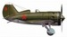

| Teaching |
| 670 S '07 |
| Projects |
| Presentations |
| Programming |
| Squadron Scramble |
| Aircrafts |
| Project 1 |
| Project 2 |
| Project 3 |
| Project 4 |
| Project 5 |
| Project 6 |
| Project 7 |
| Project 8 |
| Project 9 |
| Project 10 |
| Project 11 |
| Project 12 |
| Project 13 |
Aircrafts
The airplane images in this table, plus an index file in XML, are available as a tar bundle: aircrafts.tar.gz
| Name of Aircraft | Type | Nation | Image |
| Baku Geki KI-99 | bomber | Japan | * |
| Bell P-39D | fighter | US AF |  |
| Boeing B-17E | bomber | US AF |  |
| Boulton Paul Defiant | fighter | UK |  |
| Brewster F2A-3 | fighter | US AF |  |
| Bristol Blenheim | bomber | UK |  |
| Consolidated B-24D | bomber | US Navy |  |
| Consolidated PB2Y-3 | bomber | US AF |  |
| Curtiss P-40E | fighter | US AF |  |
| Dornier Do 26 | bomber | Germany |  |
| Douglas A-20a | bomber | US AF |  |
| Focke Wulf FW 190 | fighter | Germany |  |
| Grumman F4f-4 | fighter | US AF |  |
| Hawker Hurricane | fighter | UK |  |
| Heinkel He 111 | bomber | Germany |  |
| Lockheed P-38E | fighter | US Navy |  |
| Martin B-26C | bomber | US Navy |  |
| Messerschmitt ME-109 | fighter | Germany |  |
| Messerschmitt ME-110 | fighter | Germany |  |
| Mitsubishi 96 | fighter | Japan |  |
| Mitsubishi 98 | bomber | Japan |  |
| Mitsubishi 99 | bomber | Japan |  |
| Nakajima 97 | fighter | Japan |  |
| Northrop A-17a | bomber | US AF |  |
| Republic P-47D | fighter | US Navy |  |
| I-16 | fighter | Soviet Union |  |
| Savoia Marchetti SM82 | bomber | Italy |  |
| Sento KI-001 | fighter | Japan | * |
| Short Stirling | bomber | UK |  |
| Supermarine Spitfire | fighter | UK |  |
| Vickers Wellington | bomber | UK |  |
* According to a Web search, these two airplanes existed only in the imagination of Pearl Harbor observers and survivors.